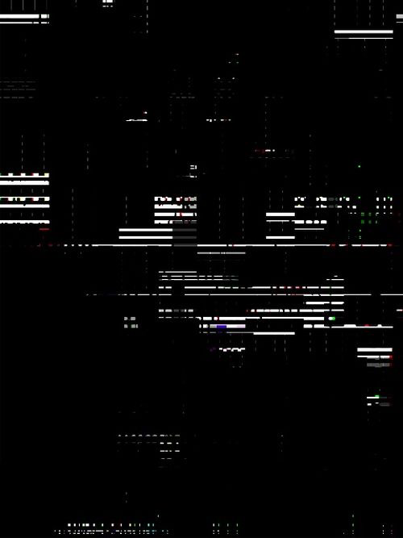

0. intra
I.

И вот оно...
Полуночная безысходность.
Странная чарующая пустота ночи. В меру прохладный лёгкий ветер, бесцельно и безнадежно плутающий по безлюдной местности.
Забытый миром маленький дом, среди пустоты вселенной.
Тонкие тёмные ветви, печально склонившиеся над ним, будто укрывали и оберегали его от неизвестности будущего.
Тьма и пустота одиночества...
В холодной колыбели сумрак покой и тишина. И не было уже в этой пустоте ни тоски ни волнующей тревоги.
Наоборот, она состояла из чего-то невидимого и неосязаемого. И без всего этого ночь не могла быть ночью.
Неизвестно, ожидало ли хоть какое-то будущее эту печальную местность, или она навсегда застряла где-то в переходе между старым и новым миром.
И летит в чёрной бездне бесконечной вселенной без каких либо опознавательных знаков и надежды на что-то. На что-то главное, важное и так необходимое.
В почти пустом доме горел холодный белый свет.
И вновь вечер, ничего практически не предвещающий и не предполагающий никакой новизны.
Лёгкий холод и едва ощутимая дрожь где-то внутри. Пустота и отчаянье.
Иногда приходит непоколебимая уверенность будто всё, что ты делал, к чему стремился в жизни, всё напрасно.
И при этом пытаешься вспомнить хоть что-то хорошее и доброе, что когда-то случалось.
Но потом понимаешь, что всё это безвозвратно ушло и будет ли ещё хоть что-подобное?
17. Бизнес-центр
I.
Если это – сон, тем лучше
Лишь бы только не кончался.
- Думаю, нам стоит отдохнуть от мистики и обилия новой шокирующей информации.
-Пойдём со мной, я покажу тебе своё место работы.
Мы подъехали к высокому зданию, стены которого заменяли тёмным стёкла.
Не трудно было догадаться, что перед нами бизнес-центр.
Высокое полностью застеклённое здание. Имело высотные переходы в соседнее здание примерно на уровне 22 этажа.
Вирджиния приложила магнитную карточку ко входной стене. Двери плавно открылись.
- На нижних этажах ведутся разработки объектов которые возможно потом появятся в матрице пространства.
А на верхних этажах расположены офисные помещения.
- Идём к лифту, нам почти на самый верх.
Поднявшись наверх и выйдя из кабины, мы двинулись вдоль коридора.
У входа в офис сидела очень молодая девушка в приталенном чёрном платье. На вид ей было лет 19-20.
- Это моя ассистентка, её зовут Ruth. Позже вы познакомитесь получше, а сейчас пока иди за мной.
- Какая юная девушка, сколько ей лет?
- Года два – два с половиной по земным меркам
- То есть?!
- К сожалению она лишь программа,
- ?!
- Да, - продолжала Вирджиния, - программный модуль, созданный для определённых задач. Я потом расскажу тебе.
В конце прохода находилось помещение, закрытое тёмными стёклами. Как только мы подошли к нему, двери открылись.
Около широкого панорамного окна стоял рабочий стол. На нём был тонкий монитор и пластина, напоминающая сенсорную клавиатуру.
На столе больше не было ни документов ни каких-либо других офисных принадлежностей.
- На самом деле, у меня и Maud не такая работа, как ты себе представляешь. Что надо в одно и то же время постоянно ходить
в одно и то же место, мучиться, занимаясь не интересным и пустым делом. Моя работа это своего рода творчество. Здесь нет ни зависимостей не обязанностей.
- И в чём же заключается твоя деятельность?
- Условно говоря, работа с пространством.
- Вы работаете вдвоём?
- Да. Этого более, чем достаточно. Ruth может заменить сотню обычных сотрудников.
-Большинство тех, кого ты здесь увидишь, только программы. Водители метро, официанты, проводники все. Помнишь женщин, работающих с Maud?
- Они тоже?
- Да.
- Но ведь все эти структуры должны откуда-то управляться.
- Их матричные коэффициенты привязаны к информационным банкам этого пространства.
При атаке, масштабном проникновении, или любых других серьёзных сбоях, они будут переведены в неактив.
Эти программные модули часть пространства и их фактическое существование в виде актива или просто файла связано с существованием исходной матрицы пространства.
- Так.. – задумчиво произнесла Вирджиния, глядя в монитор.
- Что-то не так? – настороженно спросил я.
- На связь скоро выйдет совет кольца. У них какая-то важная информация. Неизвестно сколько придётся ждать.
Тут в проходе появилась Ruth.
- Я закончила переформатирование сервисных кодировок для информационных банков.
- А, ну хорошо, тогда на сегодня всё.
- Я могу идти домой?
- Да, конечно. Спасибо за помощь.
- Не за что, всегда рада помочь.
- Хотя, подожди, немного…- остановила её Вирджиния, думая о чём-то.
После небольшой паузы я переспросил:
- Идти домой? У неё разве существует дом?
- Да
- ?
- Она так захотела. Можно конечно просто каждый раз переводить её активы в режим сна, но она всё таки чуть больше чем просто модуль.
Кстати, а зачем тебя тут держать, не желаешь проводить её. Она любит ездить на метро. Посмотришь наше метро.
Оно очень красивое, а ветка как раз проходит почти под моим домом. Ruth подскажет тебе, как добраться. А также сама расскажет тебе всё о себе.
- Хорошо, Ruth, ты слышала?
- Да, здорово! Впервые поеду домой не одна!
В следующее мгновение поверх платья Ruth появилась лёгкая молодёжная ветровка с капюшоном.
- Я готова.
- Ступайте, я закончу и тоже подъеду. Встретимся дома.
Вирджиния улыбнулась и протянула карточку для входа в квартиру.
18. Ruth
I.
Мы вышли из бизнес-центра.
- Ruth, а где вход в метро?
- Ты просто иди со мной. Вход появится сам, когда будет нужно. Спустя некоторое время впереди показалось пирамидальное образование.
Мы не торопясь спустились по эскалатору вниз. Станция была в стиле хай-тек с лёгкой примесью готики.
Хоть в метро и почти не было людей, совсем не ощущалось чувства пустоты. Наоборот какая-то жизненная энергия пропитывала пространство,
задавая ритм и вибрации в подземных артериях мегаполиса. Мы остановились у широкой платформы в ожидании поезда.
- И всё-таки кто же ты? – спросил я
- Как ты уже знаешь, меня зовут Ruth. Я – главный администратор пространства 0022099.
- Ты действительно знаешь всё?
- Я могу подключаться к любому из информационных банков, т е выходить в информационное поле системы данного пространства,
и принимать данные согласно указанным параметрам. На данный момент у меня есть доступ ко всем необходимым данным.
Однако массив данных предназначенных для перевода в stdout строго определён. Иными словами я при всём желании не смогу
сказать тебе ничего из того, к чему ты ещё не готов.
- А кто решает это?
- Высшая система. Права доступа устанавливаются сразу. Данные загружаются в информационный банк пространства непосредственно в момент создания.
При написании файлов и модулей устанавливается и уровень доступа к ним.
Пути были закрыты перегородкой с тёмным прозрачным стеклом. Проход открывался уже после прибытия поезда.
Тут тёмный туннель метро стал наполняться светом приближающегося состава. Поезд почти бесшумно выехал из тоннеля и плавно остановился.
Вагон метро был не широкий, а скорее вытянутый вверх, большую часть занимало высокое чуть затемнённое стекло.
Фары были заменены излучающей свет полосой внизу высокого лобового стекла.
Мы вошли внутрь вагона.
Изнутри он был не менее красивый и элегантный, как и всё в этом удивительном городе.
Очевидно что поезд перемещался за счёт некой подобии магнитной подушку. Поэтому мы двигались в почти полной тишине,
если не считать ели слышимое гудение двигателей и шум воздуха в тоннелях метро.
Поезд, как и другие транспортные средства этого города был управляемым сам по себе. Этому уже не было удивления,
когда даже автомобили здесь управляются автоматически.
- Удивительно. До чего же изумительная работа. – произнесла она.
- Ты о чём?
- Пространство. Этот город. Невообразимые цепочки кодов и данных. Всё является разворачиваемой в сознании проекцией кодов пространства.
- Можешь рассказать подробнее?
- В этом городе всё, как и он сам проекция.
- И даже люди?
- Да, тело это такая же голограмма, что и здания, предметы, этот поезд. Вся разница лишь в том стоят в основе наблюдателя души или нет.
И он всего лишь программный модуль и не более.
- Разве бывает, что человек просто программа, в которой нет души?
- Конечно. Например я. Разве что, чуть более сложная.
- ?!
- У меня нет свободы выбора, я лишь программа. Я делаю всё, как мне написано. – с грустью произнесла Ruth.
Все возможные варианты прописаны заранее, я ничего не решаю. Потому что меня не существует. Вся индивидуальность – лишь код. Я лишь форма, актив.
У меня нет источника, в отличие от вас...
II.
- Тебе говорит о чём-нибудь имя Бренда?
- Конечно. Это одна из создательниц этого измерения.
- Одна из? – с удивлением переспросил я
- Да именно! – повторила Ruth- Одна из.
- Ты знаешь кого то ещё?
- Конечно! Вирджиния.
- !!
- Ты разве не знал, это её творение.
- А Maud?
- Нет. Она была приглашена позже.
- Maud родная сестра Вирджинии?
- Понимаешь, здесь нет таких критериев. Хотя, в твоём понимании, можно и так сказать.
- А Бренда?
- Да, конечно.
- А в чём именно заключается твоя повседневная работа с Вирджинией?
- Мы разрабатываем структуру нашего пространства и проводим мониторинг единого поля с целью поиска и изучения других систем.
Это пространство далеко не единственное, в этой вселенной огромное число проектов. Не говоря уж о других вселенных.
Тем временем на цифровом экране вагона метро появился номер станции, где нам нужно было выходить. Выйдя из поезда мы направились следуя указателям.
Над проходом висела чёрные таблички с горящими белым светом надписями.
19. Runlevel_i
I.
Лихие пришли времена
И улицы подняли вой..
В офисных коридорах был приглушён свет. Сумрачная обстановка и тишина. Никого кроме Вирджинии здесь не было.
Сегодня хочу тебе показать очень необычный проект нашего пространства.
-Видел ли ты когда-нибудь здание с пустотой внутри? Не просто отсутствие мебели и прочей твари, pardon утвари, а самой настоящей пустотой!
- Нет никогда ничего подобного не видел, - ответил я.
- Ну это само собой! Тогда идём...
- На самом деле здесь нет ничего необычного всего лишь это один из незавершенных проектов.
Не до конца прописан код создающий матричную голограмму.
Полупрозрачные лифты в чёрном полупрозрачном здании.
Мы вошли в один из лифтов. Стенки были чёрного чуть прозрачного стекла. Сверху горел мягкий красный свет. Кнопочки светились белым.
Лифты могли перемещаться не только вверх и вниз, но и по горизонтали. Удивительно то, что при этом не чувствовалась никакая инерционная сила.
- Так непривычно то, что лифт может двигаться в любом направлении.
- Ведь всё иллюзия. Ничего же не существует. Если при проектировании матрицы в определённых условиях не указывать наличие гравитации, то её и не будет.
II.
А я не спешу начать, пока вода не стала стеклом.
Красно-помадный туман.
Трассирующий сигнал.
Добавить к бесконечности бесконечность.
Одеться в пустоту.
-Нам нужно подняться в лифте на уровень 129-го этажа ::v
Мы вышли из лифта и повернув направо стали двигаться по очень длинному, казалось бесконечному коридору.
- Мы пройдём сквозь лишь одно здание и выйдем к аэропоезду.
Не все поезда двигаются на магнитах. Составы дальнего следования в принципе не используют программу гравитации,
т.е. им не надо плотно взаимодействовать с голограммой пространства города. ::v
Пройдя здание мы вышли на станцию.
У перрона стоял длинный поезд, который по сути не отличался от других в этом городе, кроме того, что висел в пространстве.
Уйти, одевшись в пустоту.
Beyond the void
Давай пройдём вперёд в начало поезда. ::v
Этот состав тоже управлялся автоматически и можно было стоять у лобового стекла, безмолвно наблюдая за движением состава сквозь пространство.
Подойдя к окну я увидел, что мы неслись сквозь пустоту…
20. Innermir
I.
В пустоте ни зла ни границ…
Одно из параллельных пространств антиматерии
Единая сущность.
Коллективное сознание.
Зона распакетирования.
-Давай я покажу тебе некоторые из проектов, над которыми мы вместе с Ruth, а также Maud,
которая следит за безопасностью, на данный момент работаем.
Вот один интересный проект. Мы пробуем реализовать в нём иную форму жизни условного города, но в той форме,
чтобы можно было адаптировать его к внедрению в другие программно-галактические системы.
Перемещение осуществляются между ними по подземным трассам, а также пешеходным и транспортным тоннелям над поверхностью.
Все углы и грани зданий светились белым либо розово-красным, как от неоновых ламп
Казалось строения в этой голограмме города не имеют осязаемых стен.
Девятая система. Туннель/портал в гиперпространство.
Если пройти дальше в глубь пространства города, то среди прямоугольных стеклянных зданий может появиться вытянутая вверх пирамида
со светящимися гранями и стенками из чёрного стекла. Это может быть портал в иное измерение, а может всего навсего вход в метро.
Зависит от сознания и целей, с которыми ищите его.
Ваши поезда перемещаются лишь между пунктами в пределах одной матрицы. Здесь же поезд может увезти тебя в иное измерение.
Смотри на светящиеся табло а также на строку над лобовым стеклом.
II.
Нас уже не догнать
Нас уже не убить…
Все здания в городе были из тёмного стекла, которые соединялись тонкими металлическими рамами.
Если и был у них прочный фундамент и каркас, то увидеть его достаточно непросто.
У многих были такие же закрытые стеклом переходы, как приподнятые над землей, так и нет.
Казалось в случае необходимости или просто по желанию, можно обойти город, не выходя на улицу, лишь следуя пешеходным туннелям.
__protected
Тёмные стёкла и уют
Сообщение между станциями было превосходно организовано. Из любой точки города можно попасть в какую угодно другую.
Но чтобы отправиться в иные измерения нужна специальная станция.
Необычность этой станции в том, что она находится не под землёй, а достаточно высоко над.
21. Тёмные сущности
I.
А тем, кто сам добровольно падает в ад,
Добрые ангелы не причинят никакого вреда...

Со временем я начал замечать, что день стал заканчиваться все раньше. А ночь становится длиннее и длиннее.
Приходит ощущение что день вскоре не будет наступать постоянно будет ночь длинная чёрная бесконечная.
Сегодня тоже достаточно рано стемнело. Вирджиния ещё не вернулась. Весь день я провёл во власти закрытой комнаты.
Я много размышлял над увиденным, пытаясь понять что на самом деле происходит.
Я не заметил как уснул.
Когда я проснулся, увидел что в ногах на моей кровати сидит женщина и внимательно смотрит на меня. За окном стояла глубокая ночь.
Не было ни Вирджинии ни чего бы то ни было знакомого. Совершенно незнакомая мне комната. Лишь слабый свет луны освещал контуры незнакомых мне предметов.
- Кто ты? - спросил я, стараясь не демонстрировать удивление
Повисла небольшая пауза
- Тебя это волнует в первую очередь? - тихим голосом ответила дама.
Я промолчал. Не зная, что ответить.
- Тебя пытаются вернуть. Продолжим в другой раз.
Вокруг находились тёмные сущности. Одни приходят из других вселенных, другие живут прямо здесь.
Они питаются энергией и желаниями. Они существуют пока ты хочешь этого.
Это параллельная многомерное реальность. Она существует здесь и сейчас.
То что для тебя происходящее порой кажется чем-то выходящим из ряда вон, это следствие того что ты пока ещё воспринимаешь старую трёхмерную реальность и время.
Здесь все намного сложнее но вполне объяснимо в какой-то степени.
Тут за окном опять поднялась буря. Ветер холодный дождь безжалостно хлестали по ровной отвесной стене многоэтажки.
Порывы ветра постоянно усиливались и резкие всплески бросали дождевые капли а стекла.
А дома тепло и уютно.ик
22. Iwie & Iiya
I.
Мы шли по последней черте
За которой молчание…

Передо мной сидела женщина с чёрными прямыми волосами. Лоб был укрыт ровной чёлкой,
примерно до уровня бровей. Вокруг глаз был положен весьма контрастный smokye eyes.
Отрицательная частота.
-Ты единый представитель?
- Нет, коллективный разум.
- Но ты называешь себя «я»?
- Могу называть мы, так будет лучше?
- Думаю, нет.
- Я тоже.
- Ты представлена как голограмма?
- Разумеется. Всё голограмма. Мы единая сущность. Мы будем такими какими ты воспримешь нас.
- С какой целью ты приходишь в это пространство?
- У меня нет цели, просто так. Если хочешь, просто от скуки. Вы создаёте такие сложные защиты, а я всё равно могу прийти.
Крайне трудно ограничить того, кого почти нет и в то же время может быть везде, ты согласен?
- Не совсем понимаю тебя, но звучит убедительно.
-Да, ведь для меня это конкретное проживание, а не просто теория.
-Почему мы не можем ни заметить ни определить тебя в матрице.
-У меня совершенно иная природа проявленного. Кстати, познакомься с моей в вашем понимании сестрой.
Тут рядом с Ivvie появилась другая очень похожая на неё женщина.
-Точнее сказать это тоже я, но другая. Называй её Iiya.
-Iiya. У тебя нет собственного имени? – обратился я ко второй загадочной незнакомке.
-Нет. – ответила она. Если ты заметил, каждый кто проявляется в пространстве имеет уникальную индивидуальность.
Умения и навыки, которых больше нет ни у кого. Ну вот и я не исключение.
-А в чём выражается твоя индивидуальность?
- В том что я никто. У меня нет истории, данного мне когда-либо имени. Ты никогда не сможешь ничего узнать про меня,
тк нет ничего, что можно было бы обо мне узнать.
- Каждое мгновенье создаётся новая копия меня. Пока вы нелёгким трудом определяете где я в пространстве, меня там уже нет.
Вы ходите за тенью. За тенью тени.
Unknown:: undefined
II.
Женщина с чёрной челкой появлялась из тени. Глаза то чёрные то белые и при этом светились.
Иногда только её силуэт и светящиеся глаза.
Полупрозрачная девушка с чёрными прямыми длинными волосами. Рождённая бездной, сознанием пустоты. дочь тёмной материи.
Её глаза то светились мягкими белым светом, то становились абсолютно чёрными. Лоб прикрывала ровная чёлка.
Тело было слегка прозрачным и не зависело от привычной нам физики. Причём прозрачность это могла изменяться в зависимости от её желания и настроения.
Она представляла собой иную полярность и воплощала в себе всё, что способно удержать и не пустить далее.
Можно называть её злом, но правильнее будет сказать: вожделение или просто проекция созданная мною.
В основе своей она представляет пустоту, ничто. Но при этом содержащую в себе всё.
Наоборот она волшебница, исполняющая желания. Но желания не явные, а самые глубинные, о которых мы даже и не подозреваем.
Здесь уже всё зависит от того, как воспринять её. Она может и погубить и возвысить, и не она тому причина...
- Если хочешь, можем осуществить мониторинг ближних пакетов систем и попробовать найти её пространство.
- Да, думаю стоит попробовать. Вдруг получится.
- Ты уверена, что она приходит сюда целенаправленно? Быть может она просто путает коды базы и случайно попадает в матрицу нашего пространства?
- Всё может быть. Но, думаю, это не случайно. Она называет себя Iwie?
- Да. Это о чём то говорит тебе?
- Нет. Мы ещё не сталкивались ни с чем подобным.
Мы по прежнему были вдвоём с Вирджинией.
- Тогда давай завтра съездим в data-центр к Maud и попробуем провести поиск по нескольким портам. Будем хотя бы иметь представление с какой формацией столкнулись.
- Хорошо. Но мне почему-то не кажется, что она настроена враждебно. В её глазах и голосе скрыта какая-то непередаваемая печаль.
- Ладно, завтра что-нибудь придумаем.
23. Предчувствие
I.
Когда ты увидишь в глазах своих ночь…
Так как дня в этом пространстве уже давно не наступало, сложно было ответить проснулись мы днём или ночью.
- Если ты готов вставать, то приходи на кухню. Попьём чай и поедем в офис.
Я прошёл на кухню. Мы сели за стол.
-Мне уже самой интересно попытаться найти это пространство.- продолжила Вирджиния поднеся к губам чашку чая и глядя перед собой в невидимую точку.
- Что это, почему оно не определено в базе. Хочу посмотреть его матричные коды.
- Значит, ты сама создала этот мир?
- Да, но не полностью. Ведь уже были написаны коды трёхмерной основы.
Я хотела создать идеал. Рай. Но не такой, как все представляют: полянки, залитые светом, тропинки, ручейки.
Почему ночной город не может представлять из себя место блаженства и счастья? Дело ведь не пространстве не в архитектуре, а в состоянии наблюдателя.
- Не могу не признать, что у тебя более чем получилось. Это действительно невероятное место.
- Спасибо. Я старалась. В твоём прошлом мире город позиционировался как нечто деструктивное и отрицательное.
Здесь же всё наоборот. Архитектура зданий так же естественна для этой матрицы, как деревья и трава для твоего пространства.
Наши формы – части пространства. Чтобы увидеть истинное пространство необходимо отойти от всех форм.
II.
Тени-тени за моим окном
Дверь открыта в мой холодный дом…
Мы приехали в офис. Ruth как обычно уже была на своём рабочем месте.
-Ruth, давай попробуем найти пространство, откуда приходит формация, называющая себя Ivvi.
-Хорошо. – ответила Ruth, - сейчас настрою необходимое программное обеспечение.
- А вообще неплохо бы просканировать также все наши объекты, на наличии иных программ.
- Почти всё готово. Я запускаю эксплойт. – сказала Ruth не отвлекаясь от терминала. –
Если всё сработает как нужно, можно будет даже соединиться с представителями найденного измерения.
- А как долго нужно будет ждать? – поинтересовался я.
- Это зависит от проецируемого мембранного поля и мерности создаваемого пространства. Чем тоньше мир, тем сложнее его обнаружить.
Ruth: exploit запущен. Идёт сканирование…
- Странно!.
- Ты что-то нашла? – спросила Вирджиния.
- И да и нет..
- Что ты имеешь ввиду?
- Пространство найдено, но никак не идентифицируется. Как будто бы его не существует.
Вирджиния медленно прошла к окну офиса, как-будто взволнованная чем-то. Я подошёл к ней.
- Что с тобой. Ты что-то поняла?
- Не знаю. Неужели..
- ? Говори
- Неужели это пространство антивселенной?
- Антивселенной? – переспросил я.
- Тёмная вселенная или антивселенная это нечто наподобие параллельного пространства, но совершенно иными чаще противоположными матричными кодами. :: Ruth
- Ruth, продолжай работу, мне нужно поговорить с параллельной системой. Я скоро вернусь, побудь, пожалуйста с ней. –
обращаясь ко мне произнесла Вирджиния и скрылась за чуть прозрачной стеной своей переговорной.
Я присел рядом с Ruth работающей в терминалах.
Спустя почти 20 минут Вирджиния вернулась.
- Я думаю можно попробовать выйти с ней на контакт. Ruth, ты нашла ещё что-нибудь, какие либо опознавательные знаки?
- Судя по кодам, скорее всего ты права.
- Хорошо. Мы в любом случае не можем оставлять это дело на произвол. Я думаю попробовать запустить теневой процесс распакетирования
и открыть портал в максимально приближенной к их плотности мерности.
- Да, но при этом велика вероятность того, что мы не сможем остаться незамеченными.
- Надо будет посоветоваться с Maud.
Программы не находят меня
- Ruth, ты что-то нашла?
- Есть примерные координаты мембранного поля. Сейчас попробую определить структуру.
- Да, давай посмотрим насколько плотная голограмма создаётся в поле. Можно ли перенестись туда не меняя частоту.
Но в любом случае будем проецировать защитный туннель.
- Я не могу никак уточнить данные. Оно очень сильно приближено к void. Если там и будет материя то очень разряженная. Это больше энергетический мир.
24. Ночная атака
I.
Ты знаешь, что кто-то есть, но никого не видно...
Перекодировка пространства.
Сделав ещё несколько поворотов в лабиринтах здания,
мы пришли в офис Вирджинии.
Вирджиния подошла к терминальным мониторам и стала всматриваться в бегущие цифры и ежесекундно меняющиеся диаграммы.
- Что происходит? -спросил я её.
- Изменяются матричные коды.
Ты привык видеть то, что является причиной того или иного события. Здесь же всё иначе…
Если пространство – лишь созданная трёхмерная голограмма, то достаточно внести изменения в коде, и всё начинает распадаться.
Структуры Maud пытаются остановить атаку.
Ruth взволнованно работала с компьютером.
- Мы сейчас поедем в кампус к Maud. Насколько мне известно, Miut уже должна быть с ней.
Чтобы выйти в иную сферу необходимо потерять связь с данным пространством. С этой целью Ruth достроила голограмму высотки неподалеку от кампуса.
Если говорить вашим языком она теперь уходит в стратосферу.
- Неужели этого будет достаточно?
- Мы надеялись, но нет. Поэтому спроектировали специальный модуль, который будет подниматься вверх, пока не исчезнет резонанс с магнитной сеткой пространства.
- А что потом?
- Потом подойдут координаторы кольца и переведут тебя в другое пространство. Miut отправится к своей цивилизации,
она набрала достаточно опыта пребывания в этой мерности. Раньше они могли бы забрать её непосредственно отсюда,
но из-за катаклизмов нашего измерения это стала почти невозможно и даже опасно. Поэтому у нас нет другого выбора, кроме как отправить её с тобой.
- А как же ты?
- Мы с Maud останемся здесь. Точнее мы будем в специальном лепестке пространства, где с нами ничего не будет.
- Не представляю, как я буду без тебя
- Не переживай, это временно. Когда всё закончится, я снова буду с тобой. Со мной ничего не случится.
- А что будет с Ruth?
- Она будет на время переведена в состояние неактива Мы вернём её, я надеюсь, уже в новое пространство.
II.
Увидеть сквозь время и расстояние
Как окружает всё тёмная…
Ruth работала с терминалом. На чёрном экране монитора бежали бесконечные розово-алые строки с информацией о процессах.
-Я сейчас переведу пространство в аварийное состояние. Не пугайся
Свет в офисе ненадолго погас. Спустя несколько секунд загорелся тусклый красный свет.
Я подошёл к окну: как оказалось свет выключился не только в офисном здании, но и во всём городе.
-Некоторое время мы будем находиться в аварийном режиме- промолвила Ruth, не отводя глаз от монитора.
-Всё готово чтобы отправиться к точке перехода:: Ruth
-Отлично. Пойдёмте к лифту:: Virginia
На уровне 200 этажа будет капсула, не зависящая от гравитации и от чего бы то ни было ещё.
#коридоры..комнаты..
#Поле всех возможностей
Точка-бесконечность.
25. Interrupt
I.

- Сейчас будут выключены основные активы энергополя пространства. :: Ruth
- Что это значит? – спросил я
- Будут большие искажения в наблюдаемой матрице
- Это значит могут исчезать стены, здания, сохраняй спокойствие. :: Вирджиния.
- Ничего не получилось? – спросил я.
- Нет, получилось, но пока не полностью. Нужна будет более тотальная перезагрузка.
II.
Они тебя зовут. Хотят переговорить именно с тобой
Ruth, открывай портал, мы входим::v
-Я сейчас разверну координатное пространство. ::ruth. Будет видна только голографическая разметка.
Все другие необходимые объекты будем добавлять по мере необходимости.
В чёрной пустоте проявилась тонкая координатная дорога. Тут из тёмного портала одна за другой вышли три женщины.
Они были одеты в чёрный и выглядели практически одинаково за исключением силуэта из тонких белых линий на груди.
-Они хотят, чтоб ты прошёл с ними::r
-Думаю нет в этом ничего страшного, если что-то пойдёт не так, Ruth закроет портал и вернёт тебя через защитный туннель.
Я проследовал за ними. Небольшой зал со стенами из чёрного стекла возвышался над координатной плоскостью.
У дальней стены стояла женщина, при этом не было сомнений, что это кто-то из них. Но кто Iwii или iiya, сказать было сложно.
Уж слишком они похожи, да и освещение было лишь от координатной сетки.
Тут в верхних углах комнаты плавно включились бледные холодные лампочки с чуть розово-алым оттенком в излучаемом свете. Передо мной стояла iiya.
-Напрасно они так волнуются, ведь абсолютно нечего опасаться. :: i
undefined__
восприятие всего..
В мире куда мы пойдём ничего нет. Но благодаря тому может проявиться всё что захочешь.
Пустота – поле всего возможного.
Помнишь трёх дам что встречали тебя? ::iy:: это всё я.
В исчезновении нет ничего страшного, ведь исчезает всё ложное. Не может исчезнуть то чего не существует в реальности.
Как может исчезнуть пустота?
-Ты хочешь показать свой мир?
-Да, неужели тебе самому не интересно увидеть нечто совершенно иное? :: iy
-Как мы будем перемещаться в этом пространстве?
Рядом из ниоткуда появилось нечто размером с машину, но представляло собой пирамидальное образование из чёрного стекла.
Одна и граней открылась и появился проход внутрь
-Входи ::iy
Пустоту не убить, у неё ничего не отнять..
Нечто стремительно неслось в пространстве над координатной сеткой.
Впереди показалось очень высокое тонкое здание. При подлёте ближе к нему стало видно что оно не смотря на узкий фасад,
также вытянуто вглубь, по оси z.
- Хорошо когда среды бескрайней пустоты есть уголок уюта. :: iy
Забытый проект
-Ты знаешь где находится пространство, откуда приходит Ivvie?
-Нет. Я даже не уверена в том, существует ли оно. :: iy
26. Total reload
I.
Мы перешли в здание, где можно было переждать процесс перезагрузки пространства.
Здание не имело ни окон ни каких либо опознавательных знаков. Стены были как будто из цельного чёрного стекла.
Чёрный дом мироздания.
- Это помещение полностью защищено от катаклизмов пространства. Что бы не происходило с матрицей, если мы находимся внутри, нам ничего не угрожает.
Внутри так же имеется необходимое оборудование для управление матричными полями.
В помещении горел тусклый красно-розовый аварийный свет.
Было удивительно смотреть сквозь чёрные стекла здания и осознавать что за ними пустота и ничего нет.
Нет никакой матрицы людей домов чего бы то ни было ещё.
- В принципе можно на всякий случай спуститься в помещение -1-го уровня, но, похоже, в этом нет необходимости.
А также можно перемещаться в соседние здания по высотным переходам.
27. Трансцендентальный переход.
I.
Мы вышли за границы измерения.
- Удивительно! Невообразимая мерцающая мембрана. Переливы розового света из чёрной пустоты.
Как электрические разряды. Нет никакой голубой планеты, никакого бескрайнего космоса и прочей ерунды. Просто потрясающе!
Импульс проникновения
II.
Иное пространство где длинные тонкие здания висели в пустоте без какой-либо точки опоры.
Даже если темно, было всё отчётливо видно.
#Мы приблизились к одному из них. В вершине открылся ангар и мы плавно влетели туда.
28. Параллельное измерение
I.
У последней черты нас рассудят
И времени больше не будет…
Нулевое
Иные: энергетические формы жизни
Потому что
Когда эта жестокая холодная реальность приближается к нам, нам нужен друг.
Пустая, бесконечная…
Не только они единая формация, каждая из нас тоже одно.
Давай сегодня покажу как проявляется первоначальный импульс, тончайший чертёж нового измерения.
29. Branda
I.
- Понимаешь, всё что существует здесь: город, этот мир. Это всё её творение. Вирджиния создала это пространство.
Это её идеал, который создан так же и для тебя.
- Она хочет вывести пространство на совершенно новый уровень. Перевести в максимальную мерность для такого построения структур.
Чтобы оно существовало как проявленная объективная реальность, но имело кодировку высших сфер.
- Почему же ты ушла?
- Потому что надоело всё. Вся иллюзорность, выдуманные миры. Эти здания, реки, горы и другие формы. Хотелось истины, какой бы она не была.
- Ты довольна увиденным.
- Конечно. Более чем. Всё оказалось даже лучше, чем я могла себе представить.
- Надоело жить во лжи. Всё это чьё-то миротворение. Почему лучше именно так? Такая природа, светила, сценарии… Бред! Надоело играть в эти игры.